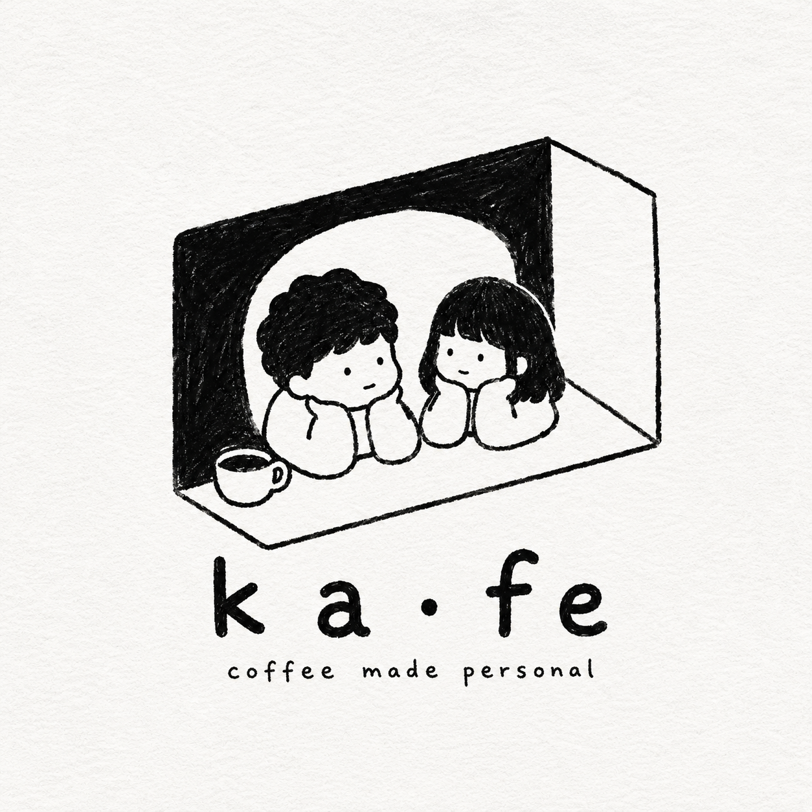

New York City · Coming Spring 2027
Specialty beans from standout roasters. Expertly crafted drinks with Asian-inspired flavors. An obsessive attention to detail in every cup.

01
Specialty beans, well sourced
From roasters we trust. Good coffee comes first — everything else sits on top of it.
02
Flavors worth remembering
Asian-inspired drinks crafted in-house — a reason to come here, not there.
03
Made how you like it
Oat, extra shot, no sugar — your way, every time.
It started with making coffee every morning for someone — exactly the way she likes it. That's what ka fe is: coffee made personal. Specialty espresso, in flavors worth remembering, made the way you take it. The name is the word for coffee — 咖啡 — and it sounds like "café." Both at once.
Every morning
Same order, made right
Your way
Not a guess, never generic
咖啡
Coffee, both ways